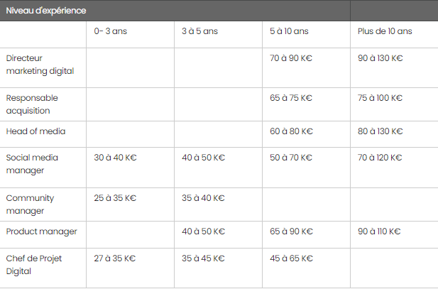

Marketing Digital
Qu'est-ce que le marketing digital ?
Le marketing digital utilise les canaux numériques pour vendre un produit ou promouvoir une marque auprès de consommateurs. Il s'appuie sur le développement de l'usage d'Internet et des objets connectés. Sites web, réseaux sociaux, sites mobiles, applications pour smartphones et tablettes, GPS, podcast, vidéos en ligne sont au coeur du marketing digital. Le but du marketing digital est d'augmenter les visites sur le site, de transformer ces visites en actes d'achat et de fidéliser le client en établissant une relation régulière avec lui.
Pourquoi faire du marketing digital ?
Le marketeur doit aller là où se trouve ses audiences. Difficile de passer à côté du canal numérique quand on sait que 91,9% des foyers français étaient connectés à Internet au dernier trimestre 2020 selon les données de Médiamétrie//Netratings. Faire du marketing digital a un autre avantage : celui du coût. Les barrières à l'entrée y sont, de ce point de vue, beaucoup moins importantes. Alors qu'un plan média à la TV, en radio ou dans la presse, se négocie en gré à gré sur des montants planchers généralement inaccessibles pour la plupart des PME, rien de tel sur le numérique. Lancer une campagne d'acquisition sur Google se fait en quelques clics. La seule limite étant celle du budget que vous voulez y allouer. Pareil pour Facebook et les autres plateformes. Les GAFA ont compris que la simplicité d'utilisation était la clé pour évangéliser. Sur l'open Web, c'est un peu plus compliqué, mais de plus en plus de trading desks lancent des offres à destination des PME pour leur permettre, elles aussi, d'apparaître au sein des sites du Monde, Figaro et d'autres médias prestigieux. Enfin, pour ceux qui ont des budgets encore plus limités, lancer un compte Facebook Twitter ou Instagram, se fait gratuitement. Si vous avez du contenu un minimum intéressant et une actualité, vous n'aurez aucun mal à capter l'attention de votre audience...
Comment faire du marketing digital ?
Pas nécessairement besoin de longues études pour faire du marketing digital. Deux des principales plateformes, Google et Facebookt, sont d'une simplicité enfantine. Il est donc possible, en auto-didacte, d'apprendre à les prendre en main et à optimiser la diffusion des campagnes qui y sont affichées. Google, Facebook et la majorité des grosses technologies proposent par ailleurs des certifications qu'il est possible de passer en candidat libre ou grâce à son entreprise. Ces certifications attestent de vos compétences comme, par exemple, la certification Google Analytics démontre que vous êtes familier de cet outil Google.
Quels sont les objectifs du marketing digital ?
L'objectif final de la plupart des actions marketing, c'est de générer des ventes. Le marketing digital n'échappe pas à la règle. Bien sûr, cela peut se faire en plusieurs étapes. Le levier marketing peut, la plupart du temps, se résumer à un grand tunnel de conversion. On distingue les actions qui permettent de toucher les utilisateurs situés en amont de ce tunnel (upper funnel) car ils n'ont pas connaissance de votre marque ou ne sont pas encore engagés dans un processus d'achat. Cela se fera via des actions dites de branding ou awareness. Les actions qui ciblent le bas du tunnel de conersion, généralement le SEA ou le retargeting, permettent à une marque de se positionner auprès d'un utilisateur déjà bien engagé dans son processus d'achat pour rafler la vente. Selon ces étapes plusieurs objectifs : recruter des clients, toucher des prospects, faire voir ses publicités, générer des clics, faire connaître sa marque... A vous de définir les KPI qui vous semblent les plus pertinents.
Quels sont les métiers du marketing digital ?
Cela donne, par niveau d'expérience : l'assistant en marketing digital, le chargé de marketing digital, le responsable du marketing digital et le directeur du marketing digital. Ces fonctions peuvent obéir à des périmètres plus restreints dans l'acquisition ou le branding, ou recouper des fonctions plus larges, comme pour un chef de projet en marketing digital ou un consultant en marketing digital, qui fera office de couteau suisse.
Quels salaires et débouchés dans le marketing digital ?
Les salaires peuvent varier du simple au quadruple selon la fonction exercée et le niveau d'expérience. Mais selon une étude réalisée par Aravati, cabinet de recrutement spécialisé dans le digital, un chef de projet digital sera embauché à un salaire compris entre 27 et 35 000 euros. Ce salaire peut monter à 65 000 euros pour les profils ayant entre 5 et 10 ans d'expérience. Un community manager débute à 25 000 euros contre 30 000 euros pour le social media manager, au profil un peu plus complet. Un responsable acquisition, qui aura généralement entre 5 et 10 d'expérience, touchera au moins 65 000 euros. Tout en haut de la pyramide, on retrouve le directeur du marketing digital dont le profil se monnaie autour des 100 000 euros.

Quelle formation et quels cours pour faire du marketing digital ?
Les profils évoluant dans l'univers du marketing général ont généralement obtenu un master, diplôme sanctionnant 5 années d'études validées dans l'enseignement supérieur. La dernière année d'étude, l'année du M2, est généralement celle de la spécialisation au digital. Ce type de diplômes s'obtient dans les écoles d'ingénieur, de commerce mais aussi, de plus en plus souvent, dans des écoles spécialisées dans le digital. L'université propose, elle aussi, des formations spécialisées dans le marketing digital. On trouvera également certains profils auto-didactes ou ayant validé une formation certifiante durant leur cursus professionnel. Des formations pour concevoir un plan marketing digital ou pour utiliser Google Analytics dans ses reportings et ses analyses peuvent bénéficier d'un financement total ou partiel de Pôle Emploi. D'autres sont éligibles au compte personnel de formation (CPF). Ce compte permet aux salariés de financer tout ou partie de leur formation. CCM Benchmark Institut, filiale du groupe Figaro - CCM Benchmark, propose, en partenariat avec l'école de commerce ESCP Europe, une formation de 11 jours réparties sur six mois, débouchant sur un certificat en marketing digital. Il est également possible d'obtenir des certifications Google marketing via les ateliers numériques que propose le géant de la publicité.
Contenu
- Définition de marketing digital
- Pourquoi le marketing digital
- Comment faire du marketing digital
- Les objectifs du marketing digital
- Les métiers du marketing digital
- Salaires et débouchés dans le marketing digital
- Formation et cours
Laissez un commentaire